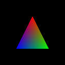

Dnes si ukážeme, jak vytvořit jednoduché shadery, jak zkonstruovat grafickou pipeline a jak vyrendrovat první trojúhelník. Kromě toho si řekneme i něco o SPIR-V a jak používat shadery napsané v GLSL.
Posledně jsme rendrovali obrázek do vk::Image v lokální paměti grafického procesoru, a pak jej překopírovali do host-visible vk::Image, odkud jej přečetl hlavní procesor a uložil do souboru. Obrázek však obsahoval jen zelené pozadí. Dnes to napravíme a vyrendujeme první trojúhelník.
Po stažení zdrojáků si můžeme otevřít main.cpp. Mezi globálními proměnnými nám přibyly vsModule a fsModule, což jsou moduly vertex shaderu a fragment shaderu. Dále se nám tam objevil pipelineLayout a samotná pipeline. K čemu jednotlivé věci slouží, si vysvětlíme v zápětí.
Pod deklaracemi standardních proměnných nám přibyly ještě dvě zvláštní: vsSpirv a fsSpirv. Toto jsou zdrojové kódy pro naše shadery v jazyce SPIR-V v jeho binární podobě. V OpenGL jsme byli zvyklí na GLSL, v DirectX na HLSL. Proč nyní SPIR-V?
SPIR-V je mezijazyk. Na straně vývojáře je obyčejně jeho program přeložen z GLSL či jiného jazyka do SPIR-V a přibalen do finální aplikace. Na straně uživatele pak aplikace posílá SPIR-V program do Vulkan zařízení, které si jej přeloží do nativních instrukcí daného grafického či vypočetního procesoru. Mezi výhodami tohoto řešení budeme jmenovat tři. Za prvé větší rychlost, neboť odpadá překlad z vysokoúrovňového programovacího jazyka. Za druhé větší přenositelnost. U GLSL kódu jsme někteří zažili, že bylo potřeba jej otestovat typicky na všech platformách, kde to mělo fungovat - obyčejně tedy Nvidia, AMD a Intel. Ne vždy ale driver druhého výrobce spolknul, co fungovalo u prvního výrobce. Se SPIR-V toto z velké části odpadá. Sám vývojář přeloží svůj GLSL kód do SPIR-V a SPIR-V je již velmi přenositelný mezi všemi výrobci. Poslední výhoda je pak pro ty, kteří hledí na duševní vlastnictví a nechtějí, aby se kód jejich shaderů dostal do rukou druhých. Kompilace srozumitelného GLSL kódu do nízkoúrovňového mezijazyka tento problém z velké části řeší. Ne úplně, ale je to rozdíl asi jako disassemblovat binárku a nebo mít kompletní C++ zdrojáky. Nyní se vraťme z teorie do naší aplikace.
Náš projekt si nese zdrojáky shaderů v jazyce GLSL v souborech shader.vert a shader.frag. Jak již název napovídá, jedná se o zdrojový kód vertex a fragment shaderu. Podívejme se nejprve na vertex shader:
#version 450
out gl_PerVertex {
vec4 gl_Position;
};
layout(location = 0) out vec3 outColor;
vec2 positions[3] = vec2[](
vec2( 0.0,-0.5),
vec2( 0.5, 0.5),
vec2(-0.5, 0.5)
);
vec3 colors[3] = vec3[](
vec3(1.0,0.0,0.0),
vec3(0.0,1.0,0.0),
vec3(0.0,0.0,1.0)
);
void main()
{
gl_Position=vec4(positions[gl_VertexIndex],0.0,1.0);
outColor=colors[gl_VertexIndex];
}
Není účelem tohoto tutoriálu studium jazyka GLSL. Na internetu nalezneme dostatek zdrojů a na stránkách khronosu dokumentaci GLSL. My se omezíme pouze na shrnutí, že vertex shader v proměnné gl_VertexIndex dostává index zpracovávaného vertexu, podívá se do pole positions a colors a v proměnných gl_Position a outColor vrátí pozici vertexu a jeho barvu.
Vrácená barva v outColor je triviální: tři floaty udávající RGB hodnoty, tedy intenzitu červené, zelené a modré v rozsahu 0.0 až 1.0. Pozice v gl_Position je složitější. Je to čtyřsložkový vektor se složkami x, y, z a w. Hodnotou w se zabývat nebudeme a pouze jí nastavíme na 1.0. Zájemci najdou její význam při studiu homogenních souřadnic, které nám mimo jiné umožňují umístit bod do nekonečna. Zůstávají proměnné x, y a z zadané v normalizovaných souřadnicích zařízení, anglicky normalized device coordinates, či zkráceně NDC. NDC mají rozsah od -1 do +1 v ose x a y, a 0 až +1 v ose z. Vše, co je mimo tyto souřadnice, je mimo pohled kamery a nebude rendrováno. V praxi používáme transformační matice (typicky model matrix, view matrix a perspective matrix), abychom realné souřadnice scény transformovali do NDC na výstupu vertex shaderu. O těchto transformacích však někdy později. Nyní budeme pro jednoduchost pracovat pouze s NDC.
Pozorný čtenář si také možná všimnul, že rozsah NDC je od -1 do +1 v ose x a y a 0 až +1 v ose z. Osa x míří vpravo. Souřadnice -1 tedy odpovídá levému rohu našeho vyrendrovaného obrázku, +1 jeho pravému rohu a 0 středu. Osa y míří dolů. Tedy -1 je na horním okraji a +1 na dolním. Toto je přesně opačně, než v OpenGL. Nicméně to více odpovídá tomu, jak pracuje hardware. Všimněme si, že souřadnice obrazovky i okna se počítají od levého horního rohu, nikoliv od spodního. Komu se to nelíbí, snadno tuto osu otočí odpovídající transformací ve vertex shaderu, nebo negativní výškou viewportu. Negativní výška viewportu je možná skrz extension VK_KHR_maintenance1, což bylo následně přijato jako součást standardu Vulkan 1.1.
Zbývá poslední otázka, proč je rozsah z od 0 do +1, když x i y ho mají od -1 do +1? Proč je to jinak než třeba v OpenGL? Důvod je technický. Čísla v plovoucí řádové čárce poskytují mnohem větší přesnost kolem čísla 0, než kolem čísla -1. S rostoucí absolutní hodnotou uloženého čísla klesá jeho přesnost. Depth buffer typicky poskytuje nejvyšší přesnost právě u kamery a se vzdáleností klesá. Je tedy nejvhodnější mít nejblíže ke kameře hodnotu z rovnu 0, aby přesnost výpočtu a přesnost uložené hodnoty byly podobné.
Tímto jsme hotovi s vertex shaderem a můžeme se podívat na fragment shader:
#version 450
layout(location = 0) in vec3 inColor;
layout(location = 0) out vec4 outColor;
void main()
{
outColor=vec4(inColor,1.0);
}
Vidíme, že fragment shader je triviální. Pouze přiřadí výslednou barvu. Barvu převezme z proměnné inColor a pouze alfa hodnotu nastaví na 1.0, avšak jakákoliv hodnota by zde fungovala, protože průhlednost ani jiný efekt založený na alfa-kanálu nepoužíváme. A kde se vzala hodnota inColor? Vygeneroval ji vertex shader do jeho proměnné outColor. A protože každý vertex dostal jinou hodnotu outColor, byla mezi nimi interpolována. Podle vzdálenosti k jednotlivým vertexům dostane daný fragment odpovídající vážený průměr z jejich barev.
Jak nyní zkompilovat naše shadery do SPIR-V? K tomu slouží utilita glslangValidator. Je také možné použít například glslc od Googlu. My se však přidržíme utilit Khronosu. V projektu přibyl soubor FindVulkan.cmake, který nám kromě Vulkan knihovny a headerů najde i glslangValidator. To standardní cmake-ový FindVulkan.cmake již umí také, ale až od verze 3.21, čímž děkuji cmake vývojářům za pomoc s mým merge requestem.
Navíc náš vlastní FindVulkan.cmake definuje makro add_shaders, které můžeme použít v CMakeLists.txt pro konverzi GLSL shaderů do SPIR-V. Zájemci si snadno prostudují. Nicméně, pokud již použijeme makro add_shaders v CMakeLists.txt, kde že najdeme výsledné SPIR-V soubory shaderů? Najdeme je ve složce, kde se ukládají zkompilované soubory a výsledná binárka. Jmenují se shader.vert.spv a shader.frag.spv. V našem projektu je následně includujeme a jejich obsah bude uložen v proměnných vsSpirv a fsSpirv, jak můžeme vidět v kódu:
// shader code in SPIR-V binary
static const uint32_t vsSpirv[] = {
#include "shader.vert.spv"
};
static const uint32_t fsSpirv[] = {
#include "shader.frag.spv"
};
A protože je includujeme, potřebujeme ještě přidat CMAKE_CURRENT_BINARY_DIR složku mezi include directories v CMakeLists.txt. Tak budou shader.vert.spv a shader.frag.spv korektně includovány.
Shader moduly vytvoříme následujícím kódem:
// create shader modules
vsModule = device->createShaderModuleUnique(
vk::ShaderModuleCreateInfo(
vk::ShaderModuleCreateFlags(), // flags
sizeof(vsSpirv), // codeSize
vsSpirv // pCode
)
);
fsModule = device->createShaderModuleUnique(
vk::ShaderModuleCreateInfo(
vk::ShaderModuleCreateFlags(), // flags
sizeof(fsSpirv), // codeSize
fsSpirv // pCode
)
);
Pouze předáme ukazatel na SPIR-V kód ve třetím parametru a velikost tohoto kódu ve druhém parametru. Dále potřebujeme vytvořit objekt pipeline layoutu, který budeme potřebovat pro vytvoření samotné pipeline:
// pipeline layout
pipelineLayout = device->createPipelineLayoutUnique(
vk::PipelineLayoutCreateInfo{
vk::PipelineLayoutCreateFlags(), // flags
0, // setLayoutCount
nullptr, // pSetLayouts
0, // pushConstantRangeCount
nullptr // pPushConstantRanges
}
);
Náš pipeline layout je velmi jednoduchý, což vidíme i na parametrech při jeho vytváření. V parametrech setLayoutCount a pSetLayouts říkáme, že nepoužíváme žádné DescriptorSety v naší pipeline. V parametrech týkající se pushConstants tvrdíme totéž o push konstantách - tedy, že žádné push konstanty v naší pipeline nepoužíváme. K descriptor setům a push konstantám se vrátíme v budoucnosti. Nyní vytvoříme naši pipeline.
Pipeline definuje, jakým postupem je zpracovávána práce, kterou odešleme na zařízení. Pipeline jsou dvou druhů - výpočetní a grafické. Pro rendrování tedy budeme používat grafické pipelines.
Vytvoření grafické pipeline vyžaduje poměrně mnoho informací, proto i kód je dosti dlouhý. Proto si jej rozebereme po částech.
// pipeline
tie(ignore, pipeline) =
device->createGraphicsPipelineUnique(
nullptr, // pipelineCache
vk::GraphicsPipelineCreateInfo(
vk::PipelineCreateFlags(), // flags
// shader stages
2, // stageCount
array{ // pStages
vk::PipelineShaderStageCreateInfo{
vk::PipelineShaderStageCreateFlags(), // flags
vk::ShaderStageFlagBits::eVertex, // stage
vsModule.get(), // module
"main", // pName
nullptr // pSpecializationInfo
},
vk::PipelineShaderStageCreateInfo{
vk::PipelineShaderStageCreateFlags(), // flags
vk::ShaderStageFlagBits::eFragment, // stage
fsModule.get(), // module
"main", // pName
nullptr // pSpecializationInfo
},
}.data(),
// vertex input
&(const vk::PipelineVertexInputStateCreateInfo&)vk::PipelineVertexInputStateCreateInfo{ // pVertexInputState
vk::PipelineVertexInputStateCreateFlags(), // flags
0, // vertexBindingDescriptionCount
nullptr, // pVertexBindingDescriptions
0, // vertexAttributeDescriptionCount
nullptr // pVertexAttributeDescriptions
},
// input assembly
&(const vk::PipelineInputAssemblyStateCreateInfo&)vk::PipelineInputAssemblyStateCreateInfo{ // pInputAssemblyState
vk::PipelineInputAssemblyStateCreateFlags(), // flags
vk::PrimitiveTopology::eTriangleList, // topology
VK_FALSE // primitiveRestartEnable
},
// tessellation
nullptr, // pTessellationState
// viewport
&(const vk::PipelineViewportStateCreateInfo&)vk::PipelineViewportStateCreateInfo{ // pViewportState
vk::PipelineViewportStateCreateFlags(), // flags
1, // viewportCount
array{ // pViewports
vk::Viewport(0.f, 0.f, float(imageExtent.width), float(imageExtent.height), 0.f, 1.f),
}.data(),
1, // scissorCount
array{ // pScissors
vk::Rect2D(vk::Offset2D(0,0), imageExtent)
}.data(),
},
// rasterization
&(const vk::PipelineRasterizationStateCreateInfo&)vk::PipelineRasterizationStateCreateInfo{ // pRasterizationState
vk::PipelineRasterizationStateCreateFlags(), // flags
VK_FALSE, // depthClampEnable
VK_FALSE, // rasterizerDiscardEnable
vk::PolygonMode::eFill, // polygonMode
vk::CullModeFlagBits::eNone, // cullMode
vk::FrontFace::eCounterClockwise, // frontFace
VK_FALSE, // depthBiasEnable
0.f, // depthBiasConstantFactor
0.f, // depthBiasClamp
0.f, // depthBiasSlopeFactor
1.f // lineWidth
},
// multisampling
&(const vk::PipelineMultisampleStateCreateInfo&)vk::PipelineMultisampleStateCreateInfo{ // pMultisampleState
vk::PipelineMultisampleStateCreateFlags(), // flags
vk::SampleCountFlagBits::e1, // rasterizationSamples
VK_FALSE, // sampleShadingEnable
0.f, // minSampleShading
nullptr, // pSampleMask
VK_FALSE, // alphaToCoverageEnable
VK_FALSE // alphaToOneEnable
},
// depth and stencil
nullptr, // pDepthStencilState
// blending
&(const vk::PipelineColorBlendStateCreateInfo&)vk::PipelineColorBlendStateCreateInfo{ // pColorBlendState
vk::PipelineColorBlendStateCreateFlags(), // flags
VK_FALSE, // logicOpEnable
vk::LogicOp::eClear, // logicOp
1, // attachmentCount
array{ // pAttachments
vk::PipelineColorBlendAttachmentState{
VK_FALSE, // blendEnable
vk::BlendFactor::eZero, // srcColorBlendFactor
vk::BlendFactor::eZero, // dstColorBlendFactor
vk::BlendOp::eAdd, // colorBlendOp
vk::BlendFactor::eZero, // srcAlphaBlendFactor
vk::BlendFactor::eZero, // dstAlphaBlendFactor
vk::BlendOp::eAdd, // alphaBlendOp
vk::ColorComponentFlagBits::eR | vk::ColorComponentFlagBits::eG |
vk::ColorComponentFlagBits::eB | vk::ColorComponentFlagBits::eA // colorWriteMask
},
}.data(),
array<float,4>{0.f,0.f,0.f,0.f} // blendConstants
},
nullptr, // pDynamicState
pipelineLayout.get(), // layout
renderPass.get(), // renderPass
0, // subpass
vk::Pipeline(nullptr), // basePipelineHandle
-1 // basePipelineIndex
)
).asTuple();
Jak vidíme, celou pipeline v její komplexitě vytváříme naráz jediným příkazem createGraphicsPipelineUnique(). Na nejvyšší úrovni předáváme jako parametr strukturu vk::GraphicsPipelineCreateInfo. Tato struktura pak obsahuje množství položek a množství pointerů na další struktury, které obsahují parametry pro tvorbu jednotlivých bloků pipeline. Začněme u prvního z bloků, který nese informaci o "shader stages", tedy o shaderech:
// shader stages
2, // stageCount
array{ // pStages
vk::PipelineShaderStageCreateInfo{
vk::PipelineShaderStageCreateFlags(), // flags
vk::ShaderStageFlagBits::eVertex, // stage
vsModule.get(), // module
"main", // pName
nullptr // pSpecializationInfo
},
vk::PipelineShaderStageCreateInfo{
vk::PipelineShaderStageCreateFlags(), // flags
vk::ShaderStageFlagBits::eFragment, // stage
fsModule.get(), // module
"main", // pName
nullptr // pSpecializationInfo
},
}.data(),
Jak vidíme, my používáme dva shadery - vertex a fragment. Detailní popis všech datových položek struktur opět nalezneme v dokumentaci. Nicméně vidíme, že tam předáváme naše dva shader moduly, které jsme si dříve vytvořili.
Další dva bloky jsou vertex input a input assembly:
// vertex input
&(const vk::PipelineVertexInputStateCreateInfo&)vk::PipelineVertexInputStateCreateInfo{ // pVertexInputState
vk::PipelineVertexInputStateCreateFlags(), // flags
0, // vertexBindingDescriptionCount
nullptr, // pVertexBindingDescriptions
0, // vertexAttributeDescriptionCount
nullptr // pVertexAttributeDescriptions
},
// input assembly
&(const vk::PipelineInputAssemblyStateCreateInfo&)vk::PipelineInputAssemblyStateCreateInfo{ // pInputAssemblyState
vk::PipelineInputAssemblyStateCreateFlags(), // flags
vk::PrimitiveTopology::eTriangleList, // topology
VK_FALSE // primitiveRestartEnable
},
Vertex input popisuje vertex attributy, tedy data, která dostane vertex shader pro každý zpracovávaný vertex. My vertex attributy budeme používat až v budoucích dílech, proto je v tuto chvíli struktura prázdná. Input assembly blok obsahuje jeden důležitý parametr a to, že rendrujeme triangle list. Triangle list znamená, že každé tři následně zpracovávané vertexy způsobí vykreslení jednoho trojúhelníku.
Proč ale používáme to zvláštní přetypování před každou strukturou? Je to bohužel proto, že některé kompilátory nám jinak hlásí "error: taking address of temporary" a projekt nezkompilují. Jedná se například o g++ (testováno na 11.2 a 7.5) a clang (testováno na 12.0 a 6.0). Přitom naše struktury konstruujeme opravdu jen jako "temporary" a přímo počítáme, že mají platnost pouze po dobu volání dané vulkanní funkce. Přetypování tedy tento problém kompilace řeší. Kód je zkompilován a všechny struktury jsou korektně konstruovány a likvidovány.
Následuje blok teselace a viewportu:
// tessellation
nullptr, // pTessellationState
// viewport
&(const vk::PipelineViewportStateCreateInfo&)vk::PipelineViewportStateCreateInfo{ // pViewportState
vk::PipelineViewportStateCreateFlags(), // flags
1, // viewportCount
array{ // pViewports
vk::Viewport(0.f, 0.f, float(imageExtent.width), float(imageExtent.height), 0.f, 1.f),
}.data(),
1, // scissorCount
array{ // pScissors
vk::Rect2D(vk::Offset2D(0,0), imageExtent)
}.data(),
},
Teselaci nepoužíváme, proto místo struktury vk::PipelineTessellationStateCreateInfo předáme nullptr. Další v pořadí je viewport, tedy transformace do souřadnic okna, nebo, přesněji řečeno, z NDC do souřadnic framebufferu. Zde specifikujeme velikost viewportu a scissors, tedy "nůžky", kterými můžeme rendrování omezit pouze na podoblast framebufferu, nebo je zadat stejné jako viewport a nic neořezávat.
Dalším blokem je rasterizace:
// rasterization
&(const vk::PipelineRasterizationStateCreateInfo&)vk::PipelineRasterizationStateCreateInfo{ // pRasterizationState
vk::PipelineRasterizationStateCreateFlags(), // flags
VK_FALSE, // depthClampEnable
VK_FALSE, // rasterizerDiscardEnable
vk::PolygonMode::eFill, // polygonMode
vk::CullModeFlagBits::eNone, // cullMode
vk::FrontFace::eCounterClockwise, // frontFace
VK_FALSE, // depthBiasEnable
0.f, // depthBiasConstantFactor
0.f, // depthBiasClamp
0.f, // depthBiasSlopeFactor
1.f // lineWidth
},
Zde v kódu vidíme parametry jako polygon mode, cull mode, front face a depth bias. Depth bias můžeme znát z OpenGL jako polygon offset. Jsou to všechno známé věci z renderingu, nicméně zájemce odkazuji na internet, kde snadno zjistí význam a principy, které se s těmito termíny pojí.
Následuje struktura pro multisampling. My pro jednoduchost použijeme jediný sample:
// multisampling
&(const vk::PipelineMultisampleStateCreateInfo&)vk::PipelineMultisampleStateCreateInfo{ // pMultisampleState
vk::PipelineMultisampleStateCreateFlags(), // flags
vk::SampleCountFlagBits::e1, // rasterizationSamples
VK_FALSE, // sampleShadingEnable
0.f, // minSampleShading
nullptr, // pSampleMask
VK_FALSE, // alphaToCoverageEnable
VK_FALSE // alphaToOneEnable
},
Principy multisamplingu dosáhly značné pokročilosti, proto struktura zdaleka neobsahuje pouze počet samplů. Nechoďme však dnes do detailů této problematiky, k níž je pro zájemce mnoho informací na internetu. Pouze připomeňme důležité rozlišení u samplů, že rozlišujeme coverage samply a color samply.
Ohledně depth a stencil bufferu: zatím z-test ani stencil test nepoužíváme, proto pointer na vk::PipelineDepthStencilStateCreateInfo nastavíme na nullptr:
// depth and stencil nullptr, // pDepthStencilState
Následuje struktura týkající se nastavení blendingu. Navzdory tomu, že žádný blending neprovádíme, je tato struktura povinná, pokud používáme color attachmenty a nezakázali jsme rasterizaci:
// blending
&(const vk::PipelineColorBlendStateCreateInfo&)vk::PipelineColorBlendStateCreateInfo{ // pColorBlendState
vk::PipelineColorBlendStateCreateFlags(), // flags
VK_FALSE, // logicOpEnable
vk::LogicOp::eClear, // logicOp
1, // attachmentCount
array{ // pAttachments
vk::PipelineColorBlendAttachmentState{
VK_FALSE, // blendEnable
vk::BlendFactor::eZero, // srcColorBlendFactor
vk::BlendFactor::eZero, // dstColorBlendFactor
vk::BlendOp::eAdd, // colorBlendOp
vk::BlendFactor::eZero, // srcAlphaBlendFactor
vk::BlendFactor::eZero, // dstAlphaBlendFactor
vk::BlendOp::eAdd, // alphaBlendOp
vk::ColorComponentFlagBits::eR | vk::ColorComponentFlagBits::eG |
vk::ColorComponentFlagBits::eB | vk::ColorComponentFlagBits::eA // colorWriteMask
},
}.data(),
array<float,4>{0.f,0.f,0.f,0.f} // blendConstants
},
Celá struktura vpodstatě jen říká, že nepoužíváme logické operace a nepoužíváme blending. To je dáno nastavením logicOpEnable na VK_FALSE a blendEnable na VK_FALSE.
A dostáváme se k posledním několika parametrům na závěr celé struktury vk::GraphicsPipelineCreateInfo:
nullptr, // pDynamicState
pipelineLayout.get(), // layout
renderPass.get(), // renderPass
0, // subpass
vk::Pipeline(nullptr), // basePipelineHandle
-1 // basePipelineIndex
)
).asTuple();
Dynamický stav nepoužíváme. Pak předáme náš nedávno vytvořený pipeline layout, renderPass a subpass index. Zbylé parametry přeskočíme. Na závěr si necháme zavoláním metody asTuple() vrátit výsledek jako tuple. Metoda createGraphicsPipelineUnique() totiž nevrací pouze vytvořenou pipeline typu vk::UniquePipeline, ale i "return code", tedy návratový kód chyby či úspěchu. Proč ale createGraphicsPipelineUnique() vrací návratový kód? Vždyť všechny návratové kódy značící chybu vyvolají výjimku a vk::eSuccess si do programu předávat nepotřebujeme. Důvod je v tom, že createGraphicsPipelineUnique() vrací více kódů, které značí úspěch. Aby se tyto úspěšné návratové hodnoty dostaly až k uživateli, vulkan.hpp je vrací spolu s výsledkem ve společné struktuře. My si tuto strukturu překonvertujeme na tuple a použijeme v přiřazení:
tie(ignore, pipeline) = device->createGraphicsPipelineUnique(...).asTuple();
Nás úspěšné kódy nezajímají, proto tuto hodnotu ignorujeme. Vždy totiž byla vrácena jediná úspěšná hodnota eSuccess a to až do uvedení extension VK_EXT_pipeline_creation_cache_control, kterou my ale nevyužíváme a žádný exotický úspěšný kód bychom tedy neměli nikdy dostat.
Poslední dvě věci, které potřebujeme k vykreslení trojúhelníku je nabindovat pipeline, laicky řečeno "vybrat ji", a pak provést příkaz vykreslení. Oba příkazy uložíme do command bufferu tímto kódem:
// rendering commands commandBuffer->bindPipeline(vk::PipelineBindPoint::eGraphics, pipeline.get()); // bind pipeline commandBuffer->draw(3,1,0,0); // draw single triangle
První parametr bindPipeline() říká, že bindujeme grafickou pipeline, a v druhém parametru předáme samotnou pipeline. Její nabindování způsobí, že následující příkazy budou využívat tuto pipeline. Následně zavoláme draw(). První parametr metody draw() říká, že chceme rendrovat tři vertexy. Druhý udává počet instancí rendrované geometrie. My tento trojúhelník nechceme instancovat, proto tento parametr nastavíme na jedničku, tedy jedna instance trojúhelníku. Třetí parametr udává číslo prvního vertexu a čtvrtý první instance. My oba necháme na nule.
Tím jsme hotovi. Při spuštění tohoto příkladu je nyní do command bufferu zaznamenáno nabindování pipeline a následný příkaz pro vykreslení trojúhelníku. Po odeslání command bufferu k provedení grafická karta zapracuje a provede vykreslení tohoto trojúhelníku do framebufferu. Výsledný obrázek je uložen do souboru, kde si jej můžeme prohlédnout:
Pokud vidíme první trojúhelník, pogratulujme si, že jsme ve znalostech dospěli tak daleko, že už ve Vulkan umíme nejen pracovat se zařízeními, ale dnes už i se shadery, s jejich kompilací, se sestavováním pipelines a s posíláním grafických příkazů pro rendrování, díky kterým jsme vykreslili náš první trojúhelník.
Tímto dílem jsme zakončili naši letní prázdninovou sérii. V další sérii se můžeme těšit na otevření prvního okna, úvod do Vulkan WSI (Window System Integration), rendrování do okna, z-buffer a mnoho dalších věcí, které nám Vulkan přináší.